Termes échiquéens
Règles du jeu

Pour jouer aux échecs, les joueurs ont besoin au minimum d'un jeu de pièces et d'un échiquier. Une pendule est également nécessaire si les joueurs décident de disputer une partie avec une contrainte de temps. De plus, les joueurs utilisent souvent une feuille de partie pour noter leurs coups et pouvoir reconstituer leur affrontement.
Un jeu de pièces d'échecs se compose de deux armées différentes, chacune contenant huit pions, deux cavaliers, deux fous, deux tours, une dame et un roi. Les joueurs peuvent distinguer leurs pièces grâce à leur couleur, soit noires soit blanches, réminiscence des pièces en ivoire et en ébène utilisées par le passé.
L'échiquier est un plateau de 8 cases colorées sur 8 avec une alternance parfaite entre le noir et blanc, formant un damier de 64 cases. Il est divisé en huit colonnes et huit rangées.
Les pendules d'échecs permettent d'indiquer à tout moment le temps restant à chaque joueur. Elles peuvent également leur ajouter du temps supplémentaire après qu'ils aient effectué un coup (appelé incrément).
Les pions valent un point et ne sont pas considérés comme des pièces à part entière. Les cavaliers et les fous sont estimés à trois points, bien que les ordinateurs évaluent un tantinet mieux les arpenteurs des diagonales que les sauteurs d'obstacles. Ces deux pièces sont qualifiées de "mineures".
Les tours valent cinq points et la dame 9.5. Elles sont toutes classées comme pièces "lourdes". Le roi est la pièce la plus précieuse aux échecs - le "perdre" coûte la victoire.
Notez que la valeur des pièces n'est qu'un concept abstrait et ne détermine pas l'issue d'une partie. Un joueur peut gagner beaucoup de matériel mais s'incliner si son adversaire parvient à le mater .
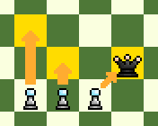
Les pions se déplacent d'une case vers l'avant, excepté depuis leur poste de départ d'où, emportés par leur élan, ils peuvent aussi jaillir de deux cases. Ils sont les seuls à ne jamais pouvoir reculer !
Les pions capturent les pièces adverses se trouvant à portée d'une case en diagonale. Ils sont les seuls à prendre de façon différente qu'ils se déplacent. Ils bénéficient aussi dans certaines circonstances d'une règle spéciale, la prise en passant.
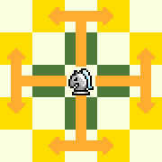
Les cavaliers font un mouvement de deux cases horizontalement puis une verticalement, ou de deux cases verticalement puis une horizontalement. On dit souvent qu'ils se déplacent à la manière d'un "L" majuscule qui pourrait se retourner dans tous les sens.
Les cavaliers capturent en atterrissant sur la case de leur victime et sont les seules pièces pouvant sauter par-dessus les autres.

Les fous peuvent se déplacer d'un nombre illimité de cases en diagonale. Ils demeurent fidèle à la couleur sur laquelle ils commencent la partie. Les joueurs démarrent toujours avec deux arpenteurs des diagonales, formant ainsi la paire de fous.
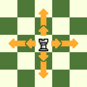
Les tours jouissent d'un mouvement illimité à l'horizontale ou à la verticale. Elles permettent aussi d'accompagner le roi dans le coup spécial, intitulé "roque".
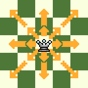
La dame est la pièce la plus puissante aux échecs. Elle peut se déplacer en diagonale, horizontalement ou verticalement d'autant de cases qu'elle le souhaite (sauf si une autre pièce la bloque). Elle combine donc les mouvements des tours et des fous.

Le roi peut se déplacer d'une seule case dans toutes les directions. Il bénéficie également d'un super pouvoir pour se mettre à l'abri, utilisable une seule fois dans la partie, dénommé le roque.
Les joueurs peuvent roquer pour protéger leur roi et développer simultanément une tour. Pour ce faire, le roi se déplace de deux cases vers sa tour et celle-ci saute pour atterrir à ses côtés.
Un joueur ne peut roquer que si toutes les conditions ci-dessous sont réunies:
- Le roi et la tour concernée n'ont jamais bougé.
- Il n'y a aucune pièce entre le roi et la tour concernée.
- Le roi n'est pas en échec.
- L'adversaire ne contrôle aucune des cases se trouvant sur le chemin traversé par le roi pour roquer.
Lorsque les pions atteignent la rangée la plus éloignée de celle où ils ont débuté la partie, ils peuvent être promus en une pièce mineure ou majeure. Les pions des blancs se transforment donc lorsqu'ils atteignent la huitième rangée, tandis que ceux noirs sont récompensés quand ils arrivent sur la première rangée.
Les pions peuvent être promus à n'importe quelle pièce, quel que soit le nombre ou la nature des autres pièces encore présentes sur l'échiquier.
La règle de la prise en passant est la plus déconcertante aux échecs pour un joueur débutant. Il s'agit d'une règle spéciale qui permet aux pions de capturer d'autres pions dans les conditions suivantes:
- Le pion capturant se trouve 3 cases plus loin que sa position de départ.
- Un pion adverse atterrit sur une colonne adjacente à la sienne en ayant avancé de deux cases d'un coup.
- La prise en passant ne peut intervenir que lors du coup suivant cette avancée adverse.
Si toutes les conditions sont réunies, le joueur attaquant peut choisir de faire la prise en passant. Le pion attaquant se déplace alors d'une case en diagonale et atterrit une case derrière le pion capturé qui est retiré de l'échiquier.
Aux échecs, un joueur peut soit gagner, soit perdre, soit faire match nul. La victoire s'obtient en matant son adversaire, en gagnant au temps ou en bénéficiant de l'abandon et la défaite de façon inverse.
La partie peut se terminer par la nulle de plusieurs manières différentes : par accord mutuel entre les joueurs, en cas de triple répétition, de position morte, de la règle des 50 coups ou de pat.
Les parties d'échecs récréatives, sur l'échiquier (OTB=over the board, sur le plateau), peuvent ne pas avoir de limite de temps, surtout chez les débutants. Cependant, les échecs de compétition utilisent toujours une pendule afin de limiter la durée de la partie.
Les parties sont répertoriées différemment en fonction de la cadence imposée. Les parties classiques ont des cadences plus longues, chaque joueur disposant généralement de plus d'une heure pour jouer ses coups. Ces cadences longues sont plus courantes pour les parties OTB.
Les cadences rapides sont celles où chaque joueur dispose d'au moins 10 minutes pour jouer ses coups. Les parties en blitz sont celles où chaque joueur dispose d'au moins trois minutes, tandis que les parties en bullet sont celles où le temps est de deux minutes ou moins. Les parties rapides, blitz et bullet sont très populaires en ligne
Les cadences peuvent également comporter des incréments ou un délai. Un incrément est une quantité de temps ajoutée à la pendule du joueur après qu'il ait effectué un coup. Un délai, en revanche, n'est pas ajouté à la pendule du joueur. Il s'agit, au contraire, du temps dont il pour effectuer un coup avant que son temps ne commence à s'écouler à son tour de jeu.
En plus des cadences mentionnées ci-dessus, il existe aussi des parties qui peuvent s'étendre sur plusieurs jours, on parlera alors d'échecs par correspondance.
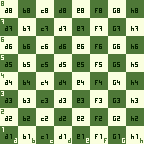
La notation échiquéenne est une manière d'enregistrer ou d'écrire les coups d'une partie d'échecs. Bien qu'il existe différentes techniques pour ce faire, la notation officielle aujourd'hui est celle dit algébrique. Elle indique le numéro du coup, la pièce déplacée et la case où elle atterrit.
En notation algébrique, chaque case de l'échiquier a un nom, composé d'une lettre qui identifie la colonne, suivi d'un chiffre qui identifie la rangée.
Chacune des pièces est abrégée par une lettre majuscule : "R" pour le roi (ou "K" pour King), "D" pour la dame (ou "Q" pour Queen), "T" pour la tour (ou "R" pour Rook), "F" pour le fou (ou "B" pour Bishop) et "C" pour le cavalier (ou "N" pour Knight). Les pions sont les seuls orphelins de cette appellation et on indique directement leur case d'arrivée.
Les prises sont indiquées par la lettre x, tandis que le petit roque court est noté 0-0 et le grand roque 0-0-0. 1-0 signifie que les blancs ont gagné, 0-1 les noirs et 1/2-1/2 une nulle.
Pendant le jeu, il est coutume de noter les mouvements de l'adversaire (ainsi que les siens), afin de pouvoir se rappeler des mouvements.
La notation pendant le jeu réutilise la notation des pièces (K,Q,N...) et la notation des cases (a1, b8, f5...)
La notation prend donc la forme suivante: (pièce qui se deplace)(case d'arrivée de la pièce)
Par exemple: Ka1, Nb7, Qd6...
Cas Particulier:
-Dans le cas d'une capture, on placera un 'x' entre le nom de la pièce et la case d'arrivée
-Si deux pièces du même type peuvent se rendre sur une même case, on placera, en fonction des cas, le nombre de la colonne d'où vient la pièce que l'on souhaite déplacés ou la lettre de la ligne de la pièce.
Par exemple: Rxe8, Bxc3... ou N1d5, Rad7... ou N4xe2, B7xd2...
Tactiques
On parle de tactique, lorsqu'un joueur effectue un coup ou une série de coups (une combinaison) qui saisit des opportunités immédiates, comme un gain matériel ou un mat. Cette séquence doit être forcée, de sorte que l'autre joueur ne puisse pas y échapper.
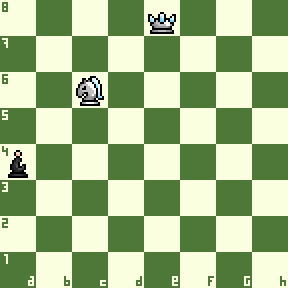
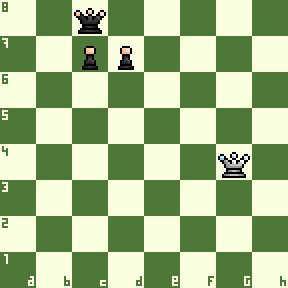
Un clouage se produit lorsqu'une pièce attaque une pièce adverse alignée avec une de ses alliées plus précieuse ou qu'elle abrite derrière elle une case critique (par exemple une case de mat). On dit alors que la pièce attaquée est "clouée" car son déplacement entraînerait une perte importante pour le joueur sous pression.
On différencie le clouage relatif (il est possible de bouger la pièce même si c'est une mauvaise idée) du clouage absolu (quand le roi se trouve derrière la pièce clouée et qu'il est donc interdit de la déplacer sous peine de se mettre en échec).


Les enfilades sont les petites cousines des clouages : il s'agit du même thème en inversant le rapport de force des pièces alignées. On parle donc d'enfilade lorsqu'une pièce attaque une pièce adverse de plus grande valeur que celle se trouvant derrière elle (dans le même alignement).
La pièce de plus grande valeur doit se sauver, sacrifiant ainsi celle se trouvant dans son dos.

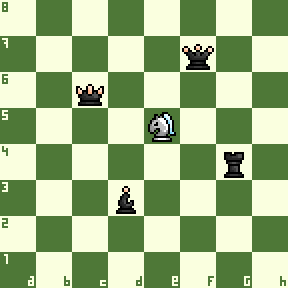
Les fourchettes se produisent lorsqu'une seule pièce (ou un pion) attaque deux ou plusieurs pièces simultanément sans qu'au moins une d'entre elles ne puisse s'échapper.
Les cavaliers sont particulièrement habiles dans cette discipline en raison de leur façon unique de se déplacer.

Une attaque à découverte se produit lorsqu'un joueur déplace une pièce pour libérer une alliée se trouvant derrière elle qui effectue ainsi une menace. Si la pièce découverte attaque le roi ennemi, il s'agit alors d'un échec à la découverte.
La spécificité de cette tactique est donc que ce n'est pas la pièce que l'on déplace qui crée la menace la plus directe.
Echec et mat
Lorsqu'un roi est attaqué, on dit qu'il est en échec. Un échec et mat (plus couramment appelé "mat") se produit lorsqu'en plus d'être en échec, un roi ne dispose d'aucun coup légal pour s'en sortir. Le mat met un terme immédiat à la partie.
Essayer de mater votre adversaire doit être votre priorité absolue quand vous jouez car même s'il vous a capturé davantage de pièces, il devra reconnaître sa défaite si vous parvenez à encercler son roi !
Mettre votre adversaire mat est l'une des trois façons de remporter une partie d'échecs. Vous pouvez également bénéficier de l'abandon de votre rival s'il estime sa cause désespérée ou bien gagner au temps quand la pendule affiche un alarmant 0.00.
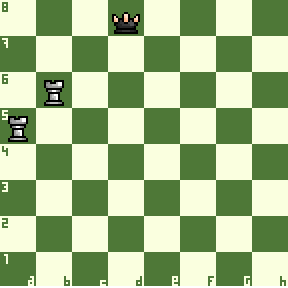
Aussi connue sous le nom du "mat de l'escalier", cette méthode consiste à faire coulisser ses deux tours l'une après l'autre pour repousser le roi adverse sur une bande de l'échiquier d'où il lui deviendra impossible de s'enfuir.
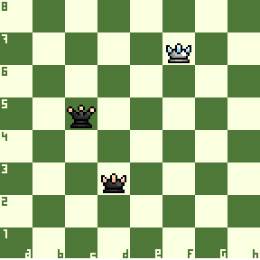
Avec l'aide de votre roi, vous pouvez terrasser le monarque de votre adversaire une fois que vous l'avez forcé à se rendre sur l'une des bandes de l'échiquier. La méthode la plus simple consistant à chasser le roi adverse avec la dame en restant à "distance de cavalier", afin de ne pas être menacé par le roi adverse.
Il s'agit d'une autre technique de mat fondamentale : l'idée est de repousser le roi de votre adversaire sur une bande de l'échiquier, d'utiliser votre roi pour couvrir les cases de fuite de son homologue, puis de porter l'estocade avec votre tour.
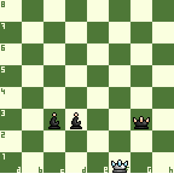
Comme pour beaucoup d'autres techniques de mat, vous devez d'abord forcer le roi adverse à se réfugier sur une bande de l'échiquier. Une fois cette mission accomplie, vous pouvez l'escorter jusque dans l'un des coins, puis utiliser votre roi et vos fous pour mettre fin à la partie.
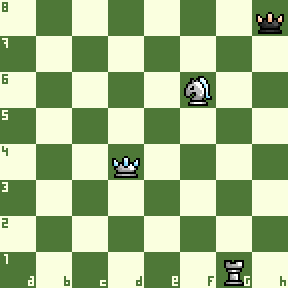
On parle de Mat des Arabes quand un cavalier et une tour allient leur force pour mater le monarque ennemi. Le cavalier protège la tour et bloque également les cases de fuite du roi.
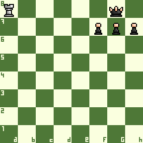
Roquer est généralement une bonne idée aux échecs car cela protège votre roi et développe votre tour en un seul coup. Cependant, vous devez demeurer vigilant et ne pas oublier de libérer une case de fuite pour votre monarque si nécessaire, sous peine d'être puni du... mat du couloir. Très courant aux échecs, c'est un motif tactique qui peut souvent faire basculer une partie, alors méfiez-vous !
Ce mat consiste à profiter d'un mur créé par les pièces de votre adversaire devant son roi, en ne lui laissant qu'une seule rangée pour respirer. Lorsque cette situation se présente, vous pouvez utiliser une tour ou une dame pour vous infiltrer dans cette rangée et ainsi mettre votre adversaire en échec et même mat.
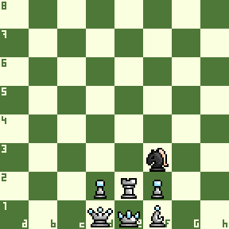
Le mat à l'étouffée tire son nom du fait que le roi n'a aucun "espace de respiration" et ne peut donc échapper à sa sentence. Un cavalier vient en effet en profiter pour terminer la partie en beauté !
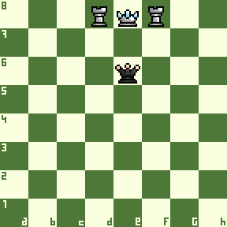
Ce schéma de mat a reçu son nom parce que la position sur l'échiquier rappelle les épaulettes que portent certains membres des forces armées sur leurs épaules. Elle implique deux pièces ennemies qui bloquent les deux côtés du roi (ses "épaules"), coincé sur une bande de l'échiquier. La dame vient ensuite porter le coup de grâce.
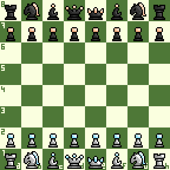
Le mat de l'imbécile est le plus rapide aux échecs, il ne se produit qu'après deux coups ! Pour accomplir cet exploit, vous devez avoir les noirs (les blancs peuvent faire le même mat en trois coups), et votre adversaire doit se montrer très coopératif. Ce mat profite de la faiblesse de la diagonale e1-h4 quand les blanc l'ouvrent de façon kamikaze.
Le mat du berger est un piège d'ouverture qui prend beaucoup de débutants au dépourvu. C'est aussi un mat rapide qui peut se produire après seulement quatre coups et qui implique l'attaque de la case la plus faible au début de la partie : f7.